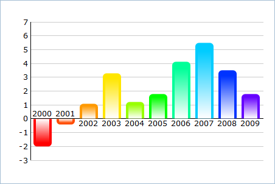

Scales
Standard scales
Horizontal and vertical scales can be set for Bar, Area, Scatter and Line Charts. You may define them both or just one of them.
Both vertical and horizontal scales have the following properties:
- template – a template for scale labels (isn't necessary for the vertical scale);
- title – the scale title;
- color - the scale color;
- lines – a boolean value (true or false), that defines if scale lines need to be drawn.
'Vertical Bar' and Line Charts personality.
- origin - the scale origin (number)
The detailed list of scale properties for all types of Charts are given in the chapter Configuration Properties.
Each mark of the horizontal scale (xAxis property) corresponds to one data object.
The vertical scale (yAxis property) sets the top and bottom limits for displayed values. The marks of the scale are defined in scale configuration by the three properties:
- end – the top value of the scale,
- start – the bottom value,
- step – the scale unit.
If these properties are not set, they will be automatically calculated (note, if you set at least one of the properties, automatic calculation is canceled and you must specify 2 remaining properties for correct running).
You may control the minimum value of a scale using the "origin" property of a chart. For example, if you've set origin:0, the scale will start from 0 value, even if the minimum value in dataset is greater.
For Bar Chart sub-types "barH" and "stackedBarH" properties of xAxis and yAxis are swapping.
var chart = new dhtmlXChart({
// other config properties
xAxis:{
title: "Years",
template: "#year#",
lines: true
},
yAxis:{
start:-10,
end:10,
step:2,
title:"Sales,mil"
},
origin:0
});
var data = [
{ sales:"3.0", year:"2000" },
{ sales:"3.8", year:"2001" },
// more data objects
{ sales:"4.8", year:"2009" }
];
chart.parse(data,"json");
If you have both positive and negative values, you may use the origin property to set the desired scale origin for better representation.
 
Custom scales
Starting from version 4.0, there is a possibility to set custom values for the horizontal scale (the vertical scale isn't applicable).
Let's assume, we have a dataset with data for random years but want to have the same step throughout the scale:
var data = [
{ id:1, sales:"55", year:2002, color: "#ee9336"},
{ id:2, sales:"61", year:2003, color: "#a7ee70"},
{ id:3, sales:"35", year:2006, color: "#58dccd"},
{ id:4, sales:"50", year:2007, color: "#476cee"},
{ id:5, sales:"59", year:2009, color: "#e33fc7"}
];
So here they are, 2 different scales for data presentation:

Default scale
var barChart = new dhtmlXChart({
view:"bar",
container:"chart1",
value:"#sales#",
color: "#color#",
xAxis:{ template:"#year#" },
yAxis:{
start:0,
step:10,
end:100
}
});

Custom scale
var barChart1 = new dhtmlXChart({
view:"bar",
container:"chart1",
value:"#sales#",
color: "#color#",
xAxis:{
template:function(item){
return item.$unit;
},
value:function(item){
return item.year;
},
units:{
start:2000,
end:2010,
next:function(value){
return value+1;
}
}
},
yAxis:{
start:0,
step:10,
end:100
}
});
First of all, let's consider a common concept of building horizontal scales.
Default scale:
Scale is built based on the data source.
Each mark of the scale corresponds to one data object, i.e. number of scale marks == number of data objects.
Custom scale:
Scale generates a temporary dataset, where number of data objects == number of scale marks.
1) The scale items are set by the units attribute. Also the attribute causes generating the temporary dataset and populating it with the initial values.
There are 2 ways to set the units attribute:
- to specify items manually:
// generates a dataset - [{$unit:2000}, {$unit:2001}, {$unit:2002}...{$unit:2010}]
units:[2000, 2001, 2002, 2003, 2004, 2005, 2006, 2007, 2008, 2009, 2010]
- to generate items automatically by specifying the start, end values and the scale step:
units:{
start:2000, //the start scale value
end:2010, //the top scale value
next:function(value){
return value+1;
}
} // generates the same dataset:
// [{$unit:2000}, {$unit:2001}, {$unit:2002}...{$unit:2010}]
The next() function sets the scale step. As a parameter it takes the previous scale value and returns the next one. The first 'previous' value that the function takes is the value of the start attribute. For example, in case of the definition above: the function takes value 2000 and returns 2001, then takes 2001 and returns 2002, and so on, while the return value < = 2010 (the value of the end parameter).
2) After the initial temporary dataset was generated, the interpreter calls the value function for each item of the real data source.
The return value of the function is compared with the $unit property of the temporary items,
and if value() == $unit data item's properties are added to the related temporary item.
For example, the value() function from the example above (value:function(item){ return item.year; }) for the first item ({ id:1, sales:"55", year:2002, color: "#ee9336"}) returns value 2002. The interpreter goes through all items of the temporary dataset and tries to find one with $unit==2002. Such an item exists (the 3rd item) and the temporary dataset will be changed as in:
[{$unit:2000}, {$unit:2001}, {$unit:2002}...{$unit:2002}] ->
[
{$unit:2000},
{$unit:2001},
{$unit:2002, id:1, sales:"55", year:2002, color: "#ee9336"}...{$unit:2010}
]
The same way the interpreter checks each item of the real data source.
3) The resulting temporary dataset will look as in:
[
{$unit:2000},
{$unit:2001},
{$unit:2002, id:1, sales:"55", year:2002, color: "#ee9336"},
{$unit:2003, id:2, sales:"61", year:2003, color: "#a7ee70"},
{$unit:2004},
{$unit:2005},
{$unit:2006, id:3, sales:"35", year:2006, color: "#58dccd"},
{$unit:2007, id:4, sales:"50", year:2007, color: "#476cee"},
{$unit:2008},
{$unit:2009, id:5, sales:"59", year:2009, color: "#e33fc7"},
{$unit:2010}
]
dhtmlxChart will built a chart based on these values.
Back to top